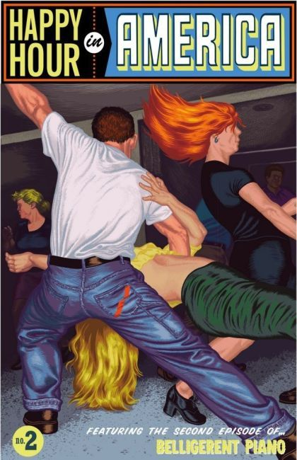
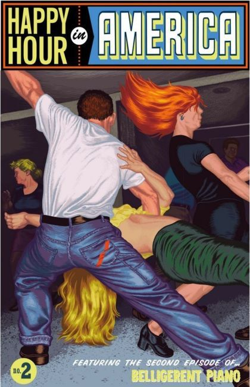

Written and Illustrated by Tim Lane
Publisher: 2017 Fantagraphics
Inspired by classic comic books of the Golden Age, Happy Hour in America is Tim Lane's debut indie comic, his epic exploration of "The Great American Mythological Drama." You'll find selections from his forthcoming graphic novels Just Like Steve McQueen and The Assasination of Billy Lyons by That Bad Man, Stagger Lee, along with many other strange, and fascinating tales from America.